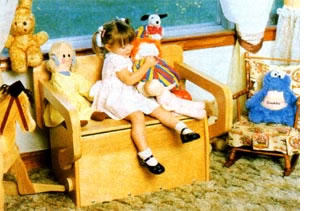
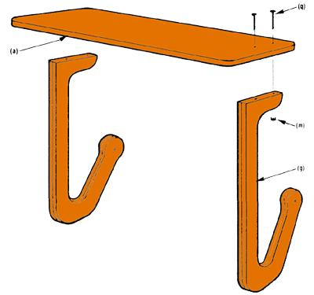
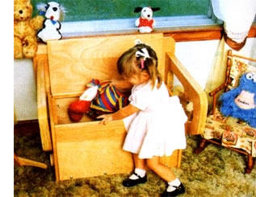
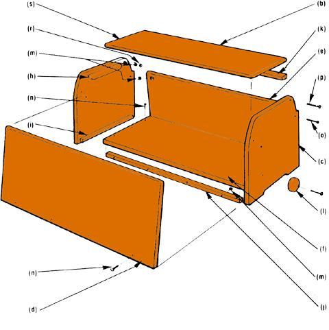
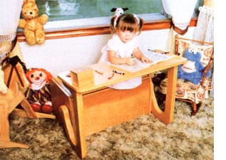
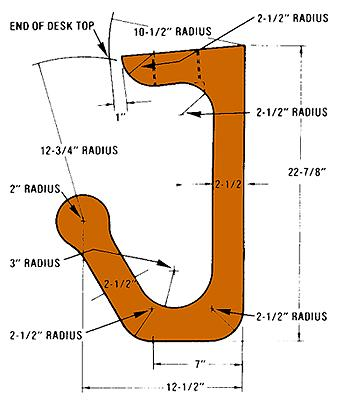
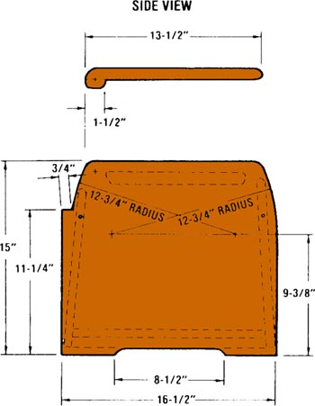
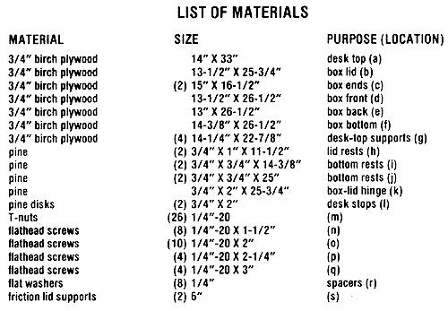

This workshop-made present should delight any youngster.
Everyone-young or old-needs a place to call his or her own . . . and for the tyke of the house, what could be better than a toy chest that also serves as a desk or bench? This convertible piece of furniture will offer a cavernous storage space for treasures, a bench (complete with arms and back) for contemplation . . . and-if the young owner simply folds the back down-a broad desk for developing those free-form works of art. (Who knows, with supplies so close to where they'll be used, maybe the crayons will even be put away!)
All of the major wooden parts for the chest/bench/desk can be trimmed from one 4' X 8' sheet of 3/4" plywood, and-if you can come up with a few scraps of one-by lumber and a selection of hardware-you can build it in about a day for less than $75. In addition, if the child you imagine enjoying this work-and play station happens to live some distance away, you'll be pleased to know that the whole thing can be broken down into an 8" X IS" X 36" package for shipping. Then, once the carton arrives at its destination, the installation of 26 flat head machine screws turns the parts back into a youngster's delight on Christmas morning.
COME PLAY WITH US
The entire unit could be built with hand tools, but if you have access to a band saw and/or a drum sander, your work will go much more quickly. All of the panels that make up the chest should first be cut to the sizes indicated in the List of Materials (check the drawings, too, for angled cuts). Then the details-such as the relieved areas on the bottoms of the box ends and the profiling along the tops of these ends-can be added to the more easily managed small parts. Feel free to deviate from the dimensions we've listed if you can visualize a more attractive profile, but do maintain a 3-3/4-inch distance between the top of the end pieces and the ledge that supports the bench back when it's in the "up" position.
Pieces of one-by lumber are glued and tacked to the underside of the chest bottom (front and back) and to the insides of the ends. These strips are drilled for the 1/4"
screws and have T-nuts embedded in them. Tnuts are also used to attach the ends to the front and back, but-in these cases -they're set in reliefs that have been chiseled into the boards, as shown in the drawings. When you form the slots, chisel through to-but not into the last ply of the 3/4" birch material. (Our wood had seven plies.)
The box lid incorporates a strip of one-by lumber-which runs along the hinged edge -to add support. This piece should be glued and tacked in place before the edges of the box lid are sanded, to assure that the two parts can be blended together well. The hinges themselves consist of 1/4"-20 X 2-1/4" flathead machine screws set through T-nuts, through the box ends, and into the joint between the lid and its one-by support . . . with flat washers positioned between the threaded fasteners and the lid to serve as spacers. However, it's very important that the lid have more support than these mere pivots. So, to protect a diminutive future owner from trapping his or her appendages between the heavy lid and the box front, we installed a pair of lid supports with adjustable friction points. (If you can't find these locally, you can request two straight friction lid supports, order number D1205, from The Woodworkers' Store, Dept. TMEN, 21801 Industrial Boulevard, Rogers, Minnesota 55374, telephone 612/428-4101.)
Before moving on to the desk portion, you should install the two lid rests, making certain that their upper surfaces are level with the centers of the pivot-bolt holes. (Because a good deal of pressure will come to bear on these two pieces of one-by lumber, you should anchor them to the box ends by sinking at least two No. 8 X 1-1/4" flathead wood screws into each board.)
Taking your measurements from the pattern we've included in the accompanying drawing, sketch the shape of the desk supports (four of them) onto the remaining portion of 3/4" plywood. Then saw these parts out with a band saw, a jigsaw, or a coping saw (and lots of endurance). Glue together pairs of the curved boards, and then sand them until their arcs are smooth and well formed. (You'll no doubt find that a drum sander will be a real boon when you're working on the inside curves.)
Four more T-nuts and 1/4"-20 X 3" flathead machine screws are used to hold the desk to its supports, and they in turn are fitted to pivots on the box ends . . . in the same fashion as was the box lid. After you've mounted the curved supports to the chest, check to see that the flat bottoms are resting on the floor, and mark the positions for the 2"-diameter stops. (These two disks will prevent the desk from folding beyond its correct position.) Finally, cinch down the desk-top pivot screws to the point where there's enough friction to prevent the work surface from falling by its own weight when it's lifted or lowered.
We applied a light golden oak stain to the activity center, and then coated it with polyurethane varnish . . . the most child resistant finish we've found. As you can see from the photographs, the chest/bench/desk has been thoroughly approved by our young model. In fact, we've had only one problem with the piece: trying to talk the youngster into giving it up!
|
 STAFF PHOTOS |
 |
 |
|
 |
 |
 |
|
 |
 |
|